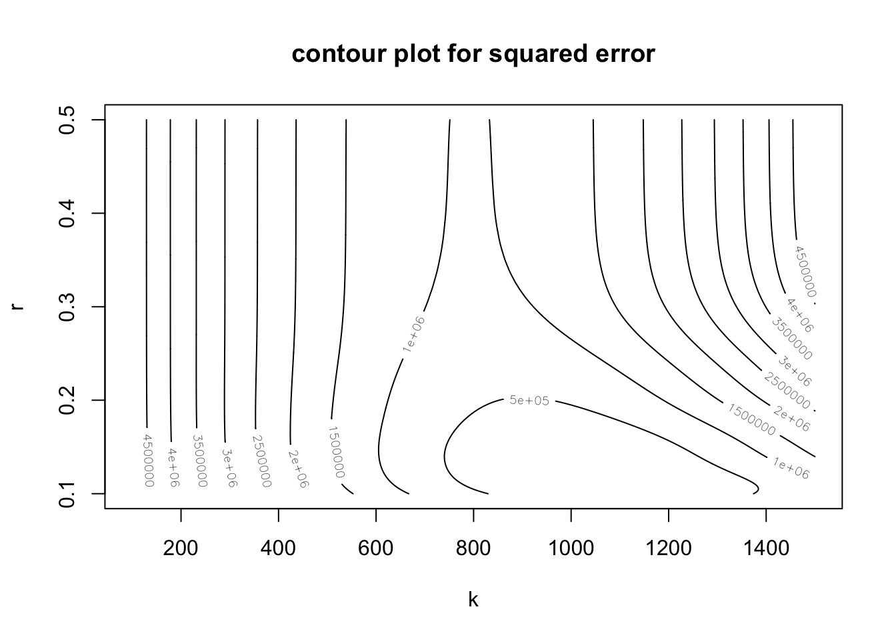

Problem 3 Exercise 3.3.3
library(graphics)
library(Matrix)##
## Attaching package: 'Matrix'## The following objects are masked from 'package:pracma':
##
## expm, lu, tril, triubeetles <- data.frame(
days = c(0, 8, 28, 41, 63, 69, 97, 117, 135, 154),
beetles = c(2, 47, 192, 256, 768, 896, 1120, 896, 1184, 1024))
##' define the sum of squared errors function
sqerr <- function(k, r) {
s <- matrix(0, nrow = length(k), ncol = length(r))
for (i in 1:length(k)) {
for (j in 1:length(r)) {
s[i, j] <- sum((beetles$beetles - k[i] * beetles$beetles[1] /
(beetles$beetles[1] + (k[i] - beetles$beetles[1]) *
exp(-r[j]*beetles$days)))^2)
}
}
s
}
##' define z function
z.vec <- function(k, r) {
n <- length(beetles$days)
z <- rep(0, n)
for (i in 1:n) {
z[i] <- beetles$beetles[i] - k*beetles$beetles[1] /
(beetles$beetles[1] + (k - beetles$beetles[1])*exp(-r*beetles$days[i]))
}
return(z)
}
##' define A matrix
A.mat <- function(k, r) {
n <- length(beetles$days)
A <- matrix(0, nrow = n, ncol = 2)
for (i in 1:n) {
A[i, 1] <- beetles$beetles[1]^2 * (1-exp(-r*beetles$days[i])) /
(beetles$beetles[1] + (k-beetles$beetles[1])*exp(-r*beetles$days[i]))^2
A[i, 2] <- beetles$beetles[1]*k*beetles$days[i]*(k-beetles$beetles[1]) *
exp(-r*beetles$days[i]) / (beetles$beetles[1]+(k-beetles$beetles[1]) *
exp(-r*beetles$days[i]))^2
}
return(A)
}
gaussNewton.beetles <- function(para0, z.vec, A.mat, maxiter = 100,
tol = .Machine$double.eps^0.5) {
para <- para0
for (i in 1:maxiter) {
Amat <- A.mat(para[1], para[2])
zvec <- z.vec(para[1], para[2])
para.new <- para + solve(t(Amat) %*% Amat + 0.0001*diag(nrow = 2)) %*%
t(Amat) %*% zvec
if (sum(abs(para.new - para)) < tol) break
para <- para.new
}
if (i == maxiter) warning("maximum iteration has reached")
return(list(root = para, niter = i))
}
fit <- gaussNewton.beetles(para0 = c(1200, 0.1), z.vec = z.vec, A.mat = A.mat)
fit$root## [,1]
## [1,] 1049.4072443
## [2,] 0.1182684k <- seq(100, 1500, by = 10)
r <- seq(0.1, 0.5, by = 0.001)
z <- sqerr(k, r)
contour(k, r, z, xlab = "k", ylab = "r", main = "contour plot for squared error")
Estimation using Gauss-Newton method is \(\hat{k} = 1049\), \(\hat{r} = 0.12\).
##' define log-likelihood function
loglikeli <- function(para) {
k <- para[1]
r <- para[2]
sigma2 <- para[3]
l <- sum(-log(2*pi*sigma2)/2 - (log(beetles$beetles) - log(k) -
log(beetles$beetles[1]) +
log(beetles$beetles[1] +
(k-beetles$beetles[1]) *
exp(-r*beetles$days))^2)/2/sigma2)
return(l)
}
##' define gradiant of loglikelihood function
grad.my <- function(para) {
k <- para[1]
r <- para[2]
sigma2 <- para[3]
g <- rep(0, 3)
g[1] <- sum(-2*(log(beetles$beetles)-log(k)-log(beetles$beetles[1])+
log(beetles$beetles[1]+(k-beetles$beetles[1])*
exp(-r*beetles$days)))*
(-1/k+exp(-r*beetles$days)/
(beetles$beetles[1]+
(k-beetles$beetles[1])*exp(-r*beetles$days)))/2/sigma2)
g[2] <- sum(2*(log(beetles$beetles)-log(k)-log(beetles$beetles[1])+
log(beetles$beetles[1]+(k-beetles$beetles[1])*
exp(-r*beetles$days)))*
beetles$days*(k-beetles$beetles[1])*exp(-r*beetles$days)/
(beetles$beetles[1]+(k-beetles$beetles[1])*exp(-r*beetles$days))/
2/sigma2)
g[3] <- sum(-1/2/sigma2+(log(beetles$beetles)-log(k)-log(beetles$beetles[1])+
log(beetles$beetles[1]+(k-beetles$beetles[1])*
exp(-r*beetles$days)))^2/2/sigma2^2)
return(g)
}
fit <- constrOptim(theta = c(10, 0.1, 1), f = loglikeli, grad = grad.my,
ui = diag(1, 3), ci = rep(0, 3),
control = list(fnscale = -1), hessian = TRUE)
fit$par## [1] 103.983292 12.124656 2.913935fit$convergence## [1] 0Diag(-solve(fit$hessian))## [1] 2.707176e+03 1.212466e+05 2.841633e+00Using BFGS methods, set constrain to make \(k\), \(r\), \(sigma^2\) nonnegative, we get the MLE estimates \(\hat{k} = 103.98\), \(\hat{r} = 12.12\), \(\hat{\sigma}^2 = 2.91\). Using inverse of negative hessian, we have these estimates’ variance to be \(2.7\times 10^3\), \(1.2\times 10^5\), \(2.8\) respectively.
But there’s problem that results will change dramatically with initial values. I just tried several different initial values, get the estimates and compare their corresponding loglikelihood. I just choose the one with maximum loglikelihood.